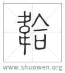

韐
𢂷或从韋。
清代 段玉裁《說文解字注》
- 士無巿有𢂷。
大夫以上祭服用玄冕爵弁服。其韠曰韍。士與君祭之服用爵弁服。其韠曰𢂷。不曰韍。故曰士無韍有𢂷也。玉藻之縕韍卽韎韐。則非不可偁韍也。
- 制如𣖁。缺四角。
玉藻曰。韠、天子直四角。直無圜殺也。公矦前後方。殺四角使之方。變於天子也。所殺者去上下各五寸。大夫前方後挫角。圜其上角。變於君也。韠以下爲前。以上爲後。士前後正。士賤。與君同不嫌也。正、直方之閒語也。天子之士則直。諸矦之士則方。按許云韐缺四角者。正謂如公矦殺四角使之方也。所謂殺四角使之方者。合上下成八角之形。方之言柧也。正義云。旣殺而補之使方。非是。云如𣖁者。古𣖁之制葢八角。故木部椑下云圜𣖁也。可以見𣖁之有棱而不正圜也。韠之制。下廣二尺。上廣一尺。長三尺。韐之制。則大體圜而八角。故毛公云。韐所以代韠也。士冠禮注云。韐之制似韠。許云士無韍有韐。葢其制不同。惟缺四角者略同諸矦大夫之韠耳。
- 爵弁服。
見士冠禮。
- 其色韎。
韋部曰。茅蒐染韋。一入曰韎。瞻彼洛矣傳曰。韎韐者、茅蒐染韋。一入曰韎。句韐所以代韠也。箋云。韎者、茅蒐染也。茅蒐韎聲也。韐、祭服之韠。合韋爲之。士冠禮注曰。韎韐、溫韍也。合韋爲之。士染以茅蒐。因以名焉。今齊人名蒨爲韎。句韐之制似韠。按凡言韎韐者。韐謂其物。韎謂其色。故士喪禮設韐帶。不連韎緇言。自六朝人不知韎韐二字可分析。詩傳、鄭箋、禮注、鄭志皆譌亂不可讀矣。
- 賤不得與裳同。
士喪禮曰。爵弁服。纁裳純衣。緇帶韎韐。纁、淺絳也。三入爲纁。韎則茅蒐一入而巳。不與裳同色也。凡韠同裳色。上文云。天子朱巿。諸矦赤巿。卿大夫赤巿蔥衡。葢天子朱裳。諸矦卿大夫赤裳。士賤則裳韠色不同。若皮弁服素韠。則士亦與裳同色也。此下鉉本有司農曰裳纁色六字。恐是淺人增注。司農者不詳其何人。許自賈侍中而外無舉官者。
- 从巿。
亦巿也。故从巿。
- 合聲。
鄭云。合韋爲之。則形聲可兼會意。古洽切。七部。
- 𢂷或从韋。
按經典有韐無𢂷。韐行𢂷廢矣。